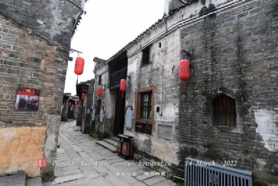

荣昌区
隶属中国重庆市，介于东经105°17′-105°44′，北纬
29°15′-29°41′之间，位于重庆市西部。早在春秋时期，荣
昌便是巴国的属地。2015年5月，国务院批复同意撤销重庆
市下辖的荣，荣昌区以浅丘为主，地势起伏平缓，平均海拔
300~400米。荣昌区属中亚热带湿润东南季风气候，年平均
降水量1099毫米，年平均气温17.8℃，年总积温6482℃，无
霜期327天以上，月极端最高温度39.9℃(1972年)，月极温最
低温度-3.4℃（1975年），历年日平均气温稳定通过12℃，
为265天。年平均日照时获得1282小时，年降雨量1111.8毫
米。
荣昌区发现的矿产资源有10多种，主要是煤炭、天然气、陶
、页岩、石灰岩、建材砂岩、石英岩和矿泉水等。生物资源有
经济作物、药用植物、园林植物和家畜家禽、淡水鱼类等生物
资源160余种。粮食作物盛产水稻、小麦、高粱、玉米等，经济
作物盛产茶叶、蚕桑、生姜等。畜禽类主要有猪、羊、鹅，其
中荣昌猪为世界八大名猪、中国三大名猪之一。 |
|
昌州故里位于荣昌濑溪河畔，再现了荣昌的历史文化风貌，是一条集生态旅游、景观长廊、历史文化、风情餐饮、宅院酒店于一体的“明清风貌古街。昌州故里背靠海棠公园，由独具特色的十九幢四合院组成，重现了古昌州“九宫十八殿，三千七百磉’’的繁华景象。昌州故里前临濑溪河，河水清澈碧玉，河边草绿树翠，河上两座建于明朝的古石拱桥一一观音桥、小滩桥静卧其间。漫步其间，尽显“人在景中走，如在画中游”的诗情画意 |
|
荣昌安陶博物馆是重庆唯一一座由镇街筹资建设的公益性博物馆，是集中展示国家级非物质文化遗产“安陶”的重要平台，也是全国唯一的一家“安陶”专业性博物馆，集收藏、展示、交流、体验、互动、科普以及研发、制作、销售等于一体。荣昌安陶博物馆以“传承•发展•创新”为展示主题，馆内设有安陶历史文物、生产场景模拟、陶器发展简史、陶艺精品展示、休闲文化长廊、陶艺制作体验、大师工作室、研发中心、陶器加工及烧制等9个主题展厅。馆内收藏有近10000件自汉代以来的“安陶”文物和精品，其中常年展出1000多件，真实、全面地反映了“安陶”的技艺传承和发展成果 |
|  |
路孔古镇位于重庆荣昌县城城东，镇街距县城13公里，幅员面积24平方公里。古镇得名来源于一段民间传说，相传明朝有位叫曾傲的和尚，云游到此，见河对岸一带风景宜人，适于修身养性，决定在此建座寺庙。发觉坡边有六个石孔，似与河中相通，便往石孔倒入糠壳上试一试，不久糠壳果然从河中冒出，于是就把这里叫作“六孔河”，后来又喊做“路孔河”。路孔场、路孔乡、路孔镇也因此得名。路孔境内的濑溪河，发源于大足，唐宋时期叫濑婆溪，是古代大足至荣昌、荣昌到泸州的主要交通运输通道，流至路孔镇白银石滩，航运受阻，货物必须在这里转船，才可继续航行 |
|